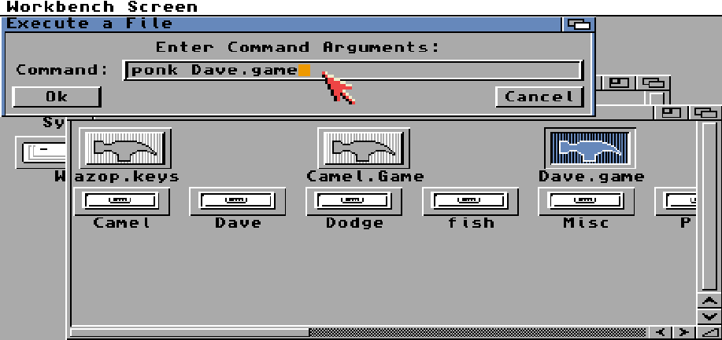

Quickstart
Follow this if you just want to use Conk without the need for Dev Tools.
- WinUAE Setup
- Workbench Setup - Stop after Display Section
From Workbench, open the "Work" disk.
Right-click Menu > Window > New Drawer > Dev > OK
Open the Dev Folder.
Right-click Menu > Window > Show > All Files
Right-click Menu > Window > Snapshot > All
From Windows, copy this repo into C:\Amiga\Dev\
ed s:User-Startup - Add the following
;BEGIN Conk
assign ck: Work:Dev/Conk
path ck:Ponk add
;END Conk
Reset (Insert + Home + Ctrl)
Then in Workbench you can double click the *.game files, and add "ponk" to the start of it.

or Right-click Menu > Workbench > Execute Command > NewShell > Ok
> cd Work:Dev/Conk/ConkDemo
> ponk Camel.game
Hit Esc to quit.
There's several *.game files in the subfolders also.